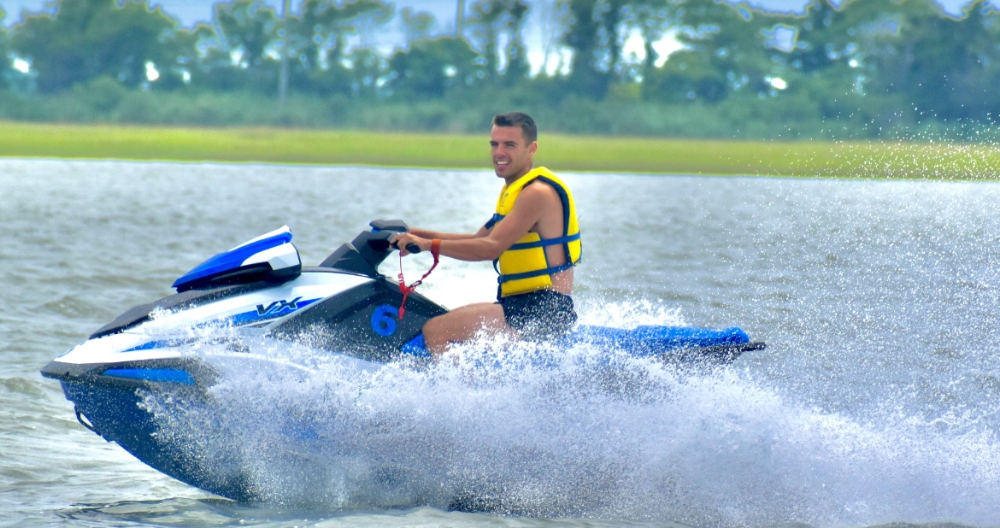
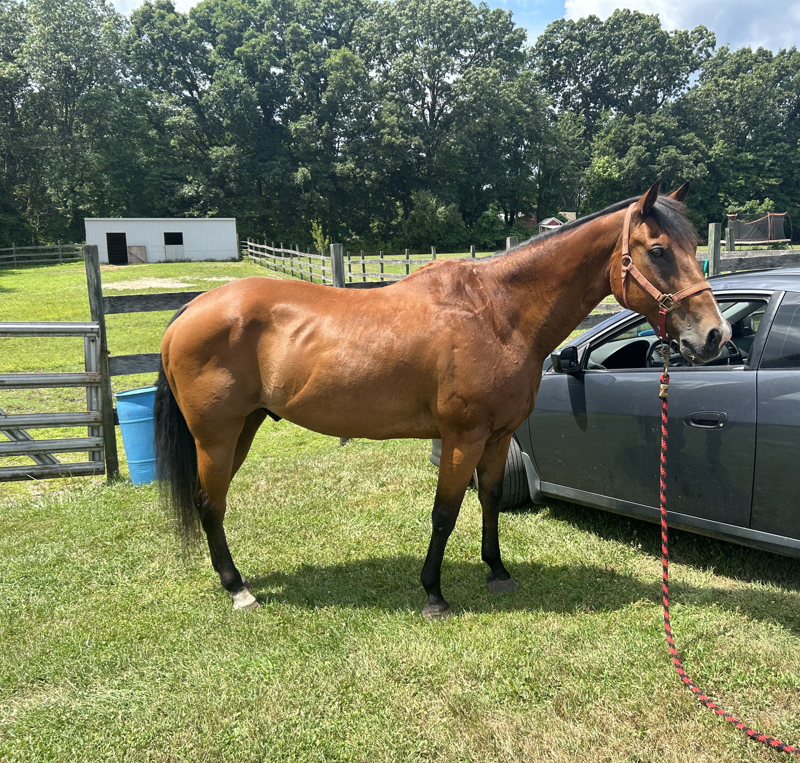
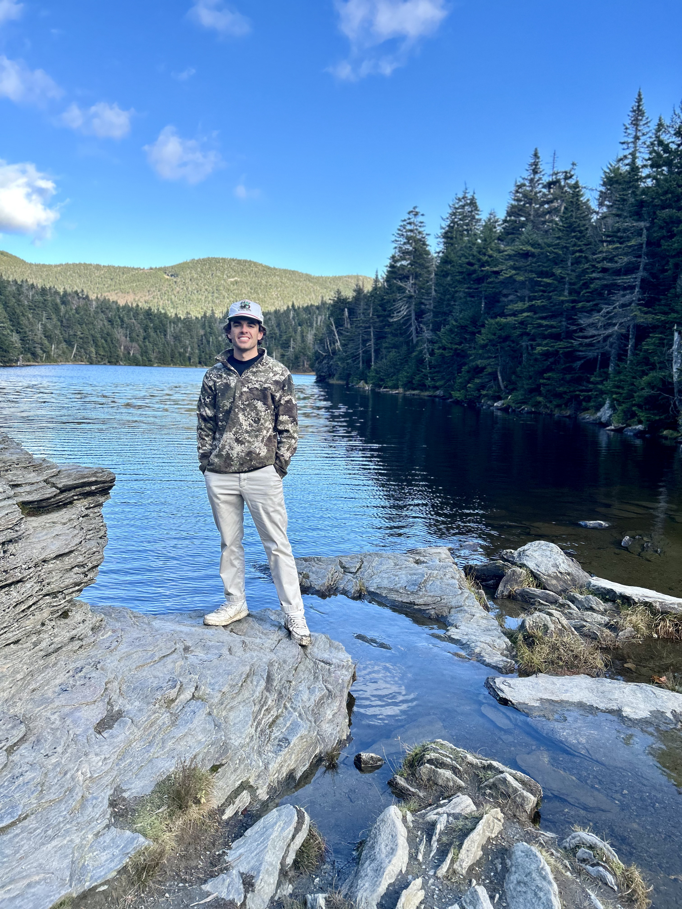

Get to know me
Kevin James Woodworth
Welcome to The Woodiverse!
My name is Kevin James Woodworth, and this site serves as a professional online portfolio — a comprehensive look into my professional journey, creative work, and personal interests.
I like to describe myself as an outgoing, open-minded, and driven communications professional with a strong passion for media relations and strategic storytelling. I thrive in fast-paced environments where ideas can be developed, refined, and brought to life. From an early age, I found fulfillment in transforming my visions into reality, whether through media production, writing, or collaborative creative work.
My passion for media began in high school, where I immersed myself in broadcast production and studio operations. I gained hands-on experience managing production schedules, operating and managing the control room, coordinating camera sequences, and contributing both behind and in front of the camera during live news broadcasts. Through academic media projects, I further developed skills in directing, producing, scriptwriting, editing, and on-screen performance. These experiences shaped my versatility in media relations and broadened my horizons to the endless possibilities in such a thrilling and thriving industry.
That foundation carried into my college career at Kean University, where I earned a Bachelor's degree in Communication Studies in 2023. My coursework and project work spanned mass media, broadcasting, scriptwriting, video editing, journalism, digital production, sports communications, business communications, and public relations. During this time, I solidified my commitment to building an encompassing career within the media relations industry.
Following graduation, I began my professional career as a freelance writer, producing timely, meaningful content focused on current news and public-interest topics.
In early 2025, I joined CMI Media Group within the Public Relations & Growth department. What began as an internship quickly evolved into a full-time position as Associate, Public Relations & Corporate Communications. In this role, I supported the development of press materials and thought leadership content, managed the company's social media presence and content, analyzed and reported quarterly engagement data, and researched and submitted prominent healthcare media advertising awards to enhance executive visibility and brand recognition. My contributions helped secure many significant industry recognitions across respected industry programs.

Living life at full speed
Outside of my professional work, I value time spent with family and friends, riding my horse Jesse, working on home improvement projects, exploring new music, fishing, and creating digital content.

Jesse

Exploring the outdoors
Thank you for taking the time to explore my portfolio. I hope this site provides insight into both the professional skillset and personal drive that define who I am. I welcome new connections, collaborations, and opportunities — please feel free to reach out through the contact section, where you can also download my full resume.
Experience & Education
2025
Associate, Public Relations & Corporate Communications
Developed press materials and thought leadership content, managed corporate social media, analyzed quarterly engagement data, and submitted award nominations resulting in multiple industry recognitions including CEO of the Year at the PM360 ELITE Trailblazers Awards (2025).
2023 – 2025
Independent
Produced timely, meaningful content focused on current news and public-interest topics across various platforms.
2019 – 2023
Bachelor of Arts, Communication Studies
Coursework spanning mass media, broadcasting, scriptwriting, video editing, journalism, digital production, sports communications, business communications, and public relations.
Pre-2019
High School — Foundation Years
Hands-on experience in broadcast production, studio operations, control room management, live news broadcasts, directing, producing, scriptwriting, and on-screen performance.
Core Skills